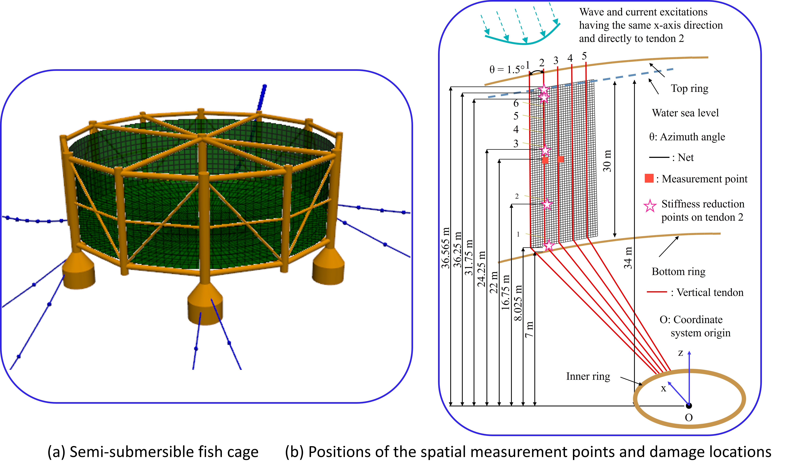

Multi-spatial measurement points based structural health monitoring in the net system of an offshore fish cage

Abstract
Offshore fish farms have been developed for providing large quantities of improved-quality aquaculture products. Critical components such as nets/tendons of the fish cages’ net systems in offshore farms may become damaged due to severe environmental conditions. Fish escape through the damaged nets with dire economic/biological consequences. Thus, early detection of these damages is important. Currently, structural health monitoring (SHM) in the net systems is costly, time-consuming, and sporadic as it is conducted via divers and remote operating vehicles. SHM in the tendons can also be achieved by checking the force signals acquired via load sensors, with only failures such as broken tendons successfully detected and not incipient damages such as degradation. The present case study investigates the detection of a single damaged vertical tendon in a cage’s net system via an automated vibration-based SHM method. The method’s novelty lies in integrating vector autoregressive models identified based on simulated displacement data from two spatial measurement points on the fish cage under changing wave and current conditions, thus allowing the accurate detection of degraded tendons and enabling a remote, continuous, cost-effective monitoring with a constant stream of integrity data. Test cases for the healthy and damaged cage are examined, with degradation (fatigue damage) considered along the whole tendon and at specific points in the tendon. The degradation is simulated by stiffness reduction, and the method successfully detects all 184 test cases for the damaged cage and 34 of 36 test cases for the healthy cage.
Read the published article ↗